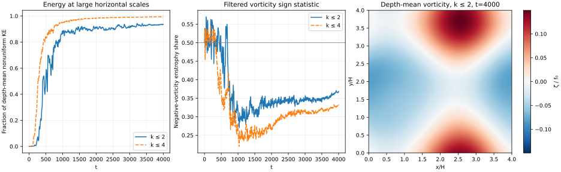

Completed anelastic output · t=0–4000
Anelastic convection through t=4000
The depth-mean flow remains cyclonically biased. At t=4000, modes k≤2 contain 93.7% of nonuniform depth-mean kinetic energy, while the anticyclonic share of filtered enstrophy is 36.7%. The zonal-u component accounts for 48.1% of that kinetic energy: large-scale energy is not synonymous with one isolated vortex.
This is the anelastic control, not the total-energy compressible experiment. The mean temperature profile has changed by up to 28.2% from t=0; thermal equilibrium is not established. The reported compressible-energy proxy is not a conserved anelastic invariant, so its residual is not interpreted as numerical energy loss.
256²×80 · Ω=3, full rotation vector at 67.5°N · periodic 4×4×1 box · β=0 · no imposed jet · WENO9, no closure. Constant, horizontally uniform bottom heating and local cap cooling. Native checkpoint continuation at t=2000; no reseeding. Time is nondimensional.
Vorticity and absolute tracer concentration
Vorticity is above absolute tracer concentration. Columns show z/H=0.19375,0.49375,0.89375. Positive ζ/f₀ is cyclonic. Color limits are fixed across time, with separate vorticity limits per depth.
801 saved states, interval 5, playback 12 frames/s. Absolute tracer uses a fixed asinh scale centered at C=0.1. Actual plane mean and RMS variation are printed. The lower two tracer planes become nearly uniform at the saved precision; this is not a hidden color-range saturation.
Large-scale organization and vortex sign
| Diagnostic | t=2000 | t=4000 |
|---|---|---|
| Depth-mean KE fraction, k≤2 | 90.6% | 93.7% |
| Zonal-u fraction of depth-mean KE | 41.8% | 48.1% |
| Anticyclonic enstrophy share, k≤2 | 33.0% | 36.7% |
| Filtered vorticity skewness, k≤2 | +1.06 | +0.80 |

Over t=3000–4000, the mean anticyclonic share is 35.2% at k≤2 and 31.8% at k≤4. The positive-sign bias therefore persists across that interval, although its strength fluctuates.
k is Fourier radius in cycles per box. Diagnostics use reference-density-weighted depth-mean velocities with their spatially uniform part removed. Anticyclonic share measures squared vorticity in negative cells, not vortex count or net circulation. Periodic net vertical vorticity is zero. These metrics and movies do not by themselves demonstrate an inverse energy flux, one persistent LSV, or a compressibility-induced sign reversal.
Tracer contrast after homogenization
This supplementary movie shows C minus each instantaneous plane mean, on one amplitude scale fixed across all depths and times. It does not normalize each frame by its variance.
At t=4000 the saved planes have RMS variations of 0, 6.25×10⁻¹⁰ and 2.68×10⁻⁶. The zero in the lowest plane means uniformity in the saved Float32 data, not proof of exact uniformity in the live solution. We cannot recover gradients smaller than the saved precision.
Resolution and fidelity context
The endpoint full-3D horizontal kinetic-energy spectrum places 1.02% at wavelengths≤8cells and 0.160% at wavelengths≤4cells. This density-weighted horizontal spectrum does not establish vertical convergence or prove an inverse cascade.
At t=4000, peak local Mach is 0.447, mass-weighted RMS Mach is 0.0827, the anelastic constraint residual is 3.77×10⁻¹⁵, and minimum sampled cap-mean N² is +0.451. The 28.2% temperature-profile departure above is independently recomputed from saved mean profiles at t=0 and 4000. The segment metadata's claim that its profile-drift reference reset at restart is inaccurate: derived temperature had not yet refreshed when that diagnostic reference was taken. This affects that reference label, not the evolved equations. The heat-proxy ledger does reset at the segment start.
A separate continuation targets t=6000. These movies stop at 4000 and make no claim about later output.
Analysis summaryStructure time seriesHorizontal KE spectrumSegment configurationMovie scales and hashesEarlier anelastic outputOriginal compressible t=2000